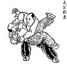
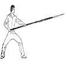

返回
投影片的家
回首頁
活動照片
6
中區武聚
2015年度
社遊
2015
社長選舉
2015年度
慶生會、聚餐
2015
寒假集訓
2014年度
平日訓練
日常訓練
教學內容
11
八極拳
教材範本
劈掛掌
教材範本
螳螂拳
教材範本
太極拳
教材範本
迷蹤拳
教材範本

八卦掌
教材範本
刀術
八卦單刀、劈掛單刀、劈掛雙刀
槍術
六合槍
劍術
昆吾一趟、昆吾二趟
棍術
虎撲群羊棍、
苗刀
苗刀四路

大槍術
鎮社之寶
奇兵器
你想的到想不到的都在這
相關影片
1
七星刀
七星破軍迅切開!!
English
©倉海國術社
聯絡我們